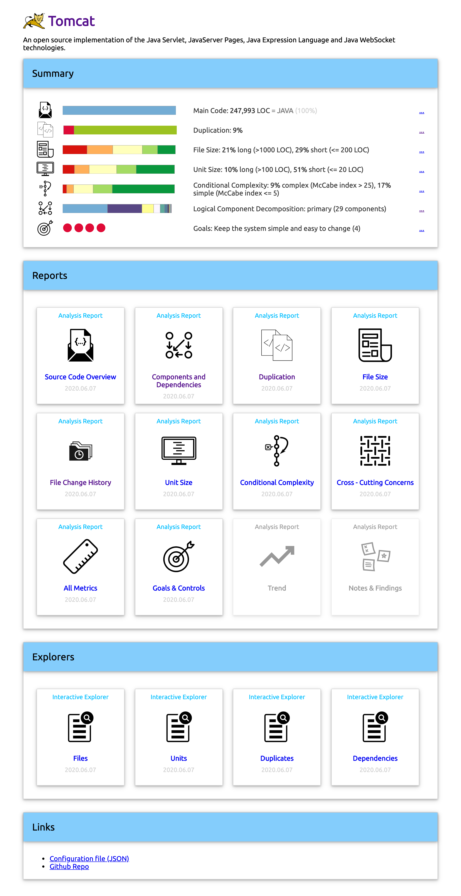
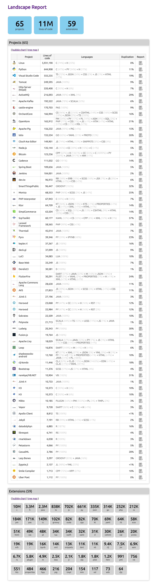

Usage: Sokrates' Reports
Overview
Image of report generation process
HTML Reports

Source Code Overview Report

For analysis purposes Sokrates separate files in scope into several categories: main, test, generated, deployment and build, and other.
The main category contains all manually created source code files that are being used in the production.
Files in the main category are used as input for other analyses: logical decomposition, cross-cutting concerns, duplication, file size, unit size, and cyclomatic complexity.
Test source code files are used only for testing of the product. These files are normally not deployed to production.
Build and deployment source code files are used to configure or support build and deployment process.
Generated source code files are automatically generated files that have not been manually changed after generation.
While a source code folder may contain a number of files, Sokrates is primarily interested in the source code files that are being written and maintained by developers.
Files containing binaries, documentation, or third-party libraries, for instance, are excluded from analysis. The exception are third-party libraries that have been changed by developers.
See an example of a Sokrates Source Code Overview report.
Duplication

For duplication, Sokrates look at places in code where there are six or more lines of code that are exactly the same.
Before duplication is calculated, the code is cleaned to remove empty lines, comments, and frequently duplicated constructs such as imports.
See an example of a Sokrates Duplication report ⤇
Logical Decomposition: Components and Dependencies
Logical decomposition is a representation of the organization of the main source code, where every and each file is put in exactly one logical component.
A software system can have one or more logical decompositions.
A logical decomposition can be defined in two ways.
First approach is based on the folders structure. Components are mapped to folders at defined folder depth relative to the source code root.
Second approach is based on explicit definition of each component. In such explicit definitions, components are explicitly named and their files are selected based on explicitly defined path and content filters.
A logical decomposition is considered invalid if a file is selected into two or more components.This constraint is introduced in order to facilitate measuring of dependencies among components.
Files not assigned to any component are put into a special “Unclassified” component.
See an example of a Sokrates Components and Dependencies report ⤇
Cross-Cutting Concerns
Cross-cutting concerns are aspects of a software system that cannot be cleanly decomposed from the rest of the system.
A single concern may be present in multiple files. One source code file may contain multiple concerns.
See an example of a Sokrates Cross-Cutting Concerns report ⤇
File Size

File size measurements show the distribution of size of files.
Files are classified in four categories based on their size (lines of code): 1-200 (small files), 200-500 (medium size files), 501-1000 (long files), 1001+ (very long files).
See an example of a Sokrates File Size report ⤇
File History

See an example of a Sokrates File History report ⤇
Unit Size

Unit size measurements show the distribution of size of units of code (methods, functions…).
Units are classified in four categories based on their size (lines of code): 1-20 (small units), 20-50 (medium size units), 51-100 (long units), 101+ (very long units).
See an example of a Sokrates Unit Size report ⤇
Conditional Complexity

Conditional complexity (also known as cyclomatic complexity) is a software metric (measurement), used to indicate the complexity of a program. It is a quantitative measure of the number of linearly independent paths through a program’s source code.
Conditional complexity is measured at the unit level (methods, functions…).
Units are classified in four categories based on the measured McCabe index: 1-5 (simple units), 6-10 (medium complex units), 11-25 (complex units), 26+ (very complex units).
See an example of a Sokrates Conditional Complexity report ⤇
Detailed Metrics
A list of all measurements.
See an example of a Sokrates Metrics report ⤇
Trend
Trend report shows difference in metric between the latest measurements and previous reference measurements.
See an example of a Sokrates Trend report ⤇
Goals & Controls
A semaphore-like controls, to get warnings based on the range or metric values.
See an example of a Sokrates Controls report ⤇
Landscape Report
